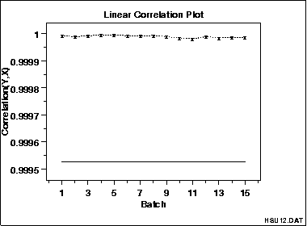

|
1.
Exploratory Data Analysis
1.3. EDA Techniques 1.3.3. Graphical Techniques: Alphabetic
|
|||
|
Purpose: Detect changes in correlation between groups |
Linear correlation plots are used to assess whether or not
correlations are consistent across groups. That is,
if your data is in groups, you may want to know if a single
correlation can be used across all the groups or whether
separate correlations are required for each group.
Linear correlation plots are often used in conjunction with linear slope, linear intercept, and linear residual standard deviation plots. A linear correlation plot could be generated intially to see if linear fitting would be a fruitful direction. If the correlations are high, this implies it is worthwhile to continue with the linear slope, intercept, and residual standard deviation plots. If the correlations are weak, a different model needs to be pursued. In some cases, you might not have groups. Instead you may have different data sets and you want to know if the same correlation can be adequately applied to each of the data sets. In this case, simply think of each distinct data set as a group and apply the linear slope plot as for groups. |
||
|
Sample Plot |

This linear correlation plot shows that the correlations are high for all groups. This implies that linear fits could provide a good model for each of these groups. |
||
|
Definition: Group Correlations Versus Group ID |
Linear correlation plots are formed by:
|
||
| Questions |
The linear correlation plot can be used to answer the
following questions.
|
||
|
Importance: Checking Group Homogeneity |
For grouped data, it may be important to know whether the different groups are homogeneous (i.e., similar) or heterogeneous (i.e., different). Linear correlation plots help answer this question in the context of linear fitting. | ||
| Related Techniques |
Linear Intercept Plot Linear Slope Plot Linear Residual Standard Deviation Plot Linear Fitting |
||
| Case Study | The linear correlation plot is demonstrated in the Alaska pipeline data case study. | ||
| Software | Most general purpose statistical software programs do not support a linear correlation plot. However, if the statistical program can generate correlations over a group, it should be feasible to write a macro to generate this plot. | ||